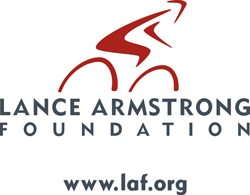

Cancer Survivorship: Pathways to Health After Treatment:
Survivor-Researcher Mentor Program
Status of Cancer Survivorship Interventions
“The Importance of Exercise and Diet for Cancer Survivors ” a personal reflection by Chris Brewer
Internet Content Manager, Lance Armstrong Foundation
www.laf.org
There is an increasing focus on not just the treatment aspect of the cancer experience, but also on the issues of cancer survivorship: those things in and around the cancer patient’s life that are as important to the individual as the actual care received. One of the key aspects of this new focus is how we can best intervene in some situations, particularly in the areas of physical fitness and dietary change. Not too ironically, these are key issues in modern American society and not mutually exclusive to the cancer realm.
Physical Activity for the Cancer Patient?
|
I recalled my own experience along these lines while Dr. Kerry Courneya, Ph.D, was presenting his report on "Promoting Behavior Change After Cancer" at the 2004 Cancer Survivorship Conference. I had been diagnosed with advanced testicular cancer in October 1996, just 2 weeks from Lance’s fateful day. Following two successful surgical procedures and two rounds of chemotherapy, I was, to be blunt, wasted from my treatments. Cancer-free, yes, but as a lifelong amateur athlete, I knew I was in terrible shape and emotionally distraught, as well.
My oncologist and urologist encouraged me to walk as much as I could, even starting my “training” while relatively bedridden following major abdominal surgery. Laps around the nurse’s station were often rewarded with a hit from the morphine pump to quell the pain, all the while assured by my medical team that in the long run this would be for the better. They explained that not only was it good to get my blood flowing and joints moving, but the tangible benefit of seeing my strength and stamina improve by being able to do more on a daily basis would boost my emotional well-being, too.
As I progressed from walking around a hospital wing with a cane to around the block at home, unassisted, I did indeed feel my energy returning as well as the hope of successful reintegration into normal society. And as this energy returned, it encouraged me to go on even further and I then started cycling to further improve my aerobic capacity. This life-changing experience led to further involvement with the Lance Armstrong Foundation and a newfound passion for the sport of cycling.
Not that everyone who starts exercising will go on to become a competitive athlete, but its clear that the benefits far outweigh the initial physical challenges. It is therefore the role of the medical team to figure out the best manner to prepare the patient for the tasks at hand, and time for the patient to get ready to get out of bed and get moving. "When someone goes in for chemotherapy, the first thing on their mind is not exercise—it's going home and taking it easy," Dr. Courneya said. "Most oncologists do not recommend exercise to cancer patients either, and one purpose of these (new) guidelines is to let oncologists and other health care providers know that we should be recommending exercise to cancer survivors both during and after treatments.”
Amen to that.
The Need for Dietary Change
As a society it is safe to say that we are obsessed with what we eat. Diet fads fade in and out like the wind, and someone with cancer is not immune to these trends but is in real need for solid advice. Wendy Demark-Wahnefried, Ph.D. from Duke University addressed many of these concerns at the Survivorship Conference. Unlike increased exercise, which may initially sound contrary to successful treatment, most of us know that what we consume has a direct relationship to how we feel and our ability to function. Anyone whose diet has consisted of fast-food and excess sweets / snacks will not be at the top of their game. But so many Americans have poor eating habits that they simply do not know what to eat to encourage effective healing and a better lifestyle after cancer. However, nutritional counseling has not really been the realm of the oncologist and so it has often been left to the patient to muddle through what may or may not be in their best interest.
“Oncology researchers know that carrying around too many extra pounds can increase cancer risk in the first place. Now, they’re beginning to collect evidence that excess weight may potentially hurt the chances of survival after some cancers. In the case of breast cancer, for which there’s the most data, there have been numerous studies that have linked being overweight at the time of diagnosis with recurrent disease, decreased survival, or both,” Dr. Demark-Wahnefried noted.
The challenge here is that dietary moods of America are almost always in a state of flux as new knowledge is garnered and urban myths are fought. Here again, though, the cancer community can take a lesson from the athletic world that is not looking for a quick-fix but rather a long-term approach to dietary needs. Cancer survivors, like athletes, need to fuel their bodies efficiently and effectively to allow them the best chance to heal and to combat future cancers as well. Dr. Demarkl-Wahnefried recommends a high-fiber, low-fat diet and regular exercise. While this may sound like common-sense advice, in these days of high-carb, high-protein, Caveman, and other diet fads, it’s clear that common sense is not that common, and again it falls on the partnership of the medical team and the patient to find what works best in their situation.
Summary
As an athlete it is good to know that the approach I took in my cancer survivorship was apparently the correct one. Exercise as best you can, eat right, and follow your medical team’s advice. The challenge here is that according to these two researchers, I was in the minority and essentially got lucky in my approach. It is therefore incumbent upon us to spread the word that these concepts are important to all cancer survivors and not just a select few, and in the process we’ll improve their quality of life and potentially reduce medical costs and the risk of future cancers. All that from some things we’ve suspected beneficial for a long time now.